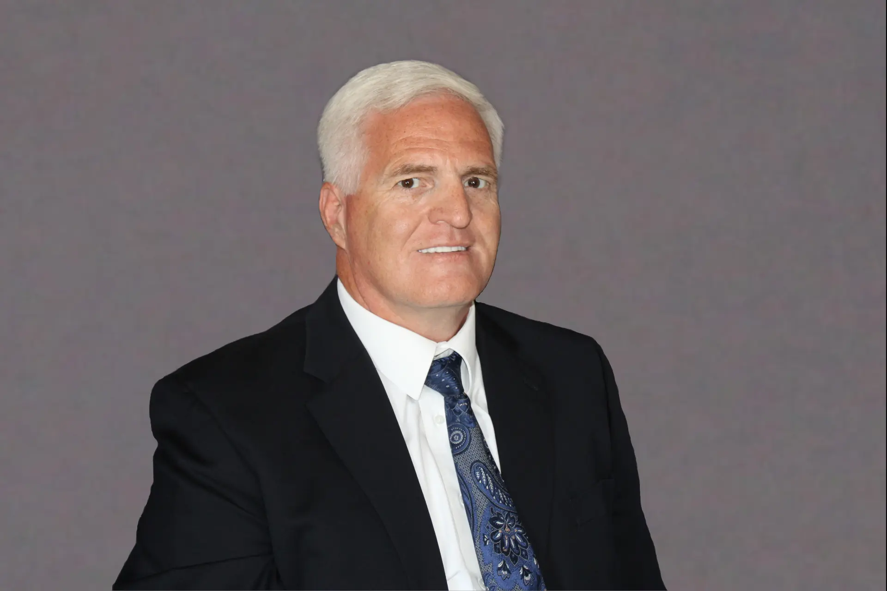

Ralph Borcherds | WDD 130
I am your instructor for this course. My last name is pronounced like orchards with a B in front.
I am a graduate of Brigham Young University-Idaho with a Bachelors in Web Design and Development. After graduation I decided to become an instructor for the school and give back to the school. I found that I enjoyed teaching while I was a student.
I live in the desert of Southern California about 20 miles outside of Palm Springs, CA. I am an IT Consultant and professional Web Developer and do a lot of consulting for local companies. I am always working on a new web project using PHP, JavaScript, CSS/SCSS, MySQL and other various technologies. You will learn about these as you learn more about web development.
My wife and daughter also received their Bachelor degrees from BYU-Idaho. My wife earned her Bachelors of Science in Nursing and my daughter earned her Business Administration Bachelors. We all graduated the same semester, April 2020 right after the lock-downs started.
I am the Elders Quorum President in my ward and my wife if the Relief Society President. As such we are very busy with our callings and coordinating the Lords work in the Ward. We have nine grandchildren. The three oldest are 10 years old and born withing a 3 month span.
We do spend most Saturday mornings riding horses, so no meetings with students during family time.